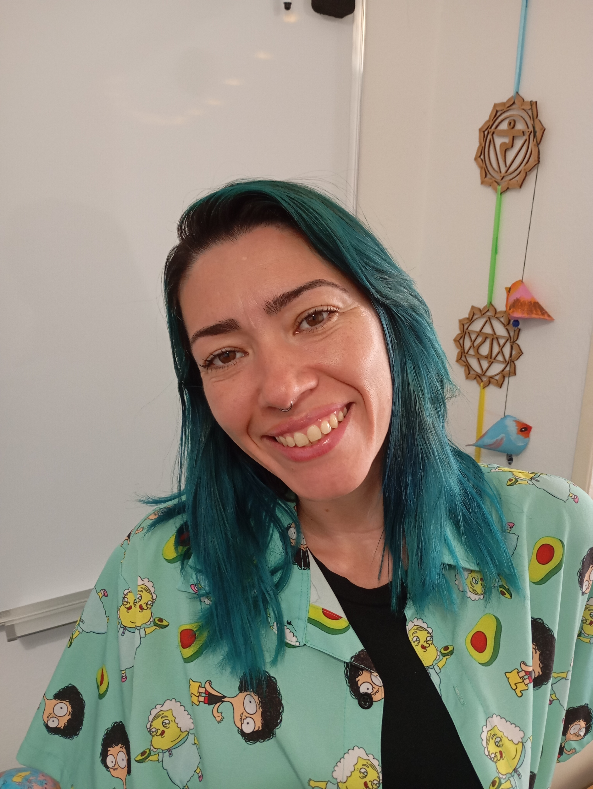

Sou arte educadora há mais de duas décadas e construí meu caminho sempre guiada pela sensibilidade,
pela criatividade e pela presença humana. A Arte Terapia entrou na minha vida muito antes de ter nome,
sempre enxerguei a arte como abrigo, linguagem e possibilidade de cura.
Com o tempo, percebi algo simples e profundo: muitas pessoas carregam emoções, pensamentos e cansaços
que não têm onde pousar. Às vezes falta espaço, falta tempo… ou falta alguém que escute de verdade.
Foi assim que uni minha experiência com arte, acolhimento e sensibilidade para criar um espaço seguro de
expressão e conversa.
Hoje, trabalho com Escuta Ativa e Arte Terapia como caminhos complementares. Acolho histórias, sentimentos
e silêncios, respeitando o ritmo de cada pessoa, oferecendo presença calma e um lugar onde a palavra e a
criação têm espaço para existir sem julgamentos.
Aqui, você encontra:
🌿 escuta sensível
🌿 presença genuína
🌿 expressão criativa
🌿 sigilo, respeito e profissionalismo
🌿 acolhimento humano e leve
Mais do que uma técnica, meu trabalho é um encontro.
Um espaço onde você pode falar, sentir, criar e respirar com tranquilidade.
Quando você precisar de acolhimento, seja em palavras, seja em arte, estarei aqui.
